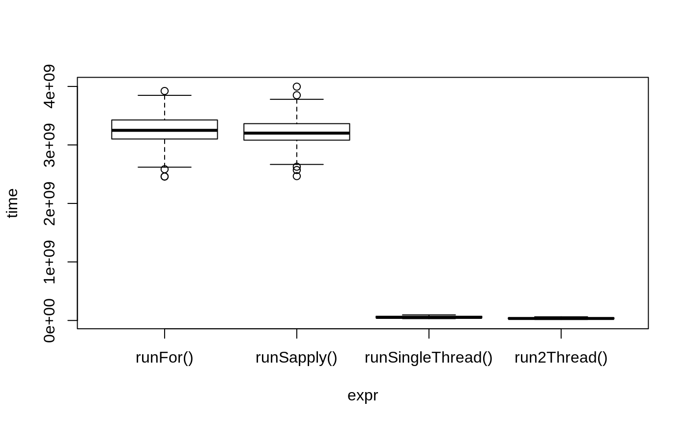
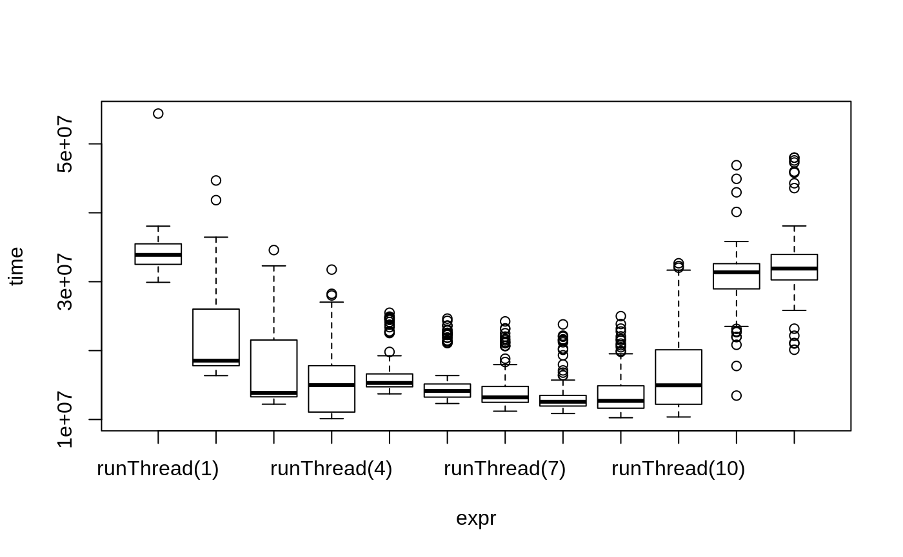

RxODE-speed.RmdRxODE originally developed as an ODE solver that allowed an ODE solve for a single subject. This flexibility is still supported.
The original code from the RxODE tutorial is below:
library(RxODE)
library(microbenchmark)
library(mvnfast)
mod1 <- RxODE({
C2 = centr/V2;
C3 = peri/V3;
d/dt(depot) = -KA*depot;
d/dt(centr) = KA*depot - CL*C2 - Q*C2 + Q*C3;
d/dt(peri) = Q*C2 - Q*C3;
d/dt(eff) = Kin - Kout*(1-C2/(EC50+C2))*eff;
eff(0) = 1
})
## Create an event table
ev <- et() %>%
et(amt=10000, addl=9,ii=12) %>%
et(time=120, amt=20000, addl=4, ii=24) %>%
et(0:240) ## Add Sampling
nsub <- 100 # 100 subproblems
sigma <- matrix(c(0.09,0.08,0.08,0.25),2,2) # IIV covariance matrix
mv <- rmvn(n=nsub, rep(0,2), sigma) # Sample from covariance matrix
CL <- 7*exp(mv[,1])
V2 <- 40*exp(mv[,2])
params.all <- cbind(KA=0.3, CL=CL, V2=V2, Q=10, V3=300,
Kin=0.2, Kout=0.2, EC50=8)The slowest way to code this is to use a for loop. In this example we will enclose it in a function to compare timing.
In general for R, the apply types of functions perform better than a for loop, so the tutorial also suggests this speed enhancement
runSapply <- function(){
res <- apply(params.all, 1, function(theta)
mod1$run(theta, ev)[, "eff"])
}You can also have RxODE solve all the subject simultaneously without collecting the results in R, using a single threaded solve.
The data output is slightly different here, but still gives the same information:
RxODE supports multi-threaded solves, so another option is to have 2 threads (called cores in the solve options, you can see the options in rxControl() or rxSolve()).
Now the moment of truth, the timings:
bench <- microbenchmark(runFor(), runSapply(), runSingleThread(),run2Thread())
print(bench)
#> Unit: milliseconds
#> expr min lq mean median uq
#> runFor() 156.60984 163.21596 168.88643 165.88840 169.41585
#> runSapply() 155.62966 161.62281 166.64359 164.64744 168.19696
#> runSingleThread() 22.77057 24.19888 26.03352 26.79937 27.62924
#> run2Thread() 12.84143 13.59835 14.92278 13.89325 14.40610
#> max neval
#> 222.00680 100
#> 212.60378 100
#> 31.47903 100
#> 24.86860 100plot(bench)
It is clear that the largest jump in performance when using the solve method and providing all the parameters to RxODE to solve without looping over each subject with either a for or a sapply. The number of cores/threads applied to the solve also plays a role in the solving.
We can explore the number of threads further with the following code:
runThread <- function(n){
solve(mod1, params.all, ev, cores=n)[,c("sim.id", "time", "eff")]
}
bench <- eval(parse(text=sprintf("microbenchmark(%s)",
paste(paste0("runThread(", seq(1, rxCores()),")"),
collapse=","))))
print(bench)
#> Unit: milliseconds
#> expr min lq mean median uq max
#> runThread(1) 22.724293 24.662408 28.00473 26.37738 29.74891 43.46057
#> runThread(2) 12.904059 13.844819 16.67738 14.88489 18.45214 27.22734
#> runThread(3) 10.178467 11.159814 13.61586 12.61528 15.27065 22.70593
#> runThread(4) 9.289086 10.441511 13.77315 12.05476 16.49884 26.20847
#> runThread(5) 8.286723 9.661418 12.37161 10.90519 14.34310 21.21531
#> runThread(6) 7.958701 8.830697 12.83863 10.59800 15.17836 30.50273
#> runThread(7) 10.017018 11.270968 14.22066 12.08321 16.29115 28.04328
#> runThread(8) 9.393729 10.835258 13.04892 11.69694 13.56937 29.40983
#> runThread(9) 9.350593 10.583047 12.96255 11.50771 14.37825 23.89286
#> runThread(10) 9.075859 10.643823 13.82299 11.83596 15.60314 27.38260
#> runThread(11) 8.896011 10.526345 14.97767 13.16521 16.59990 35.80608
#> runThread(12) 8.886038 10.781746 15.96923 14.26619 19.41466 37.70501
#> neval
#> 100
#> 100
#> 100
#> 100
#> 100
#> 100
#> 100
#> 100
#> 100
#> 100
#> 100
#> 100plot(bench)
There is a suite spot in speed vs number or cores. The system type, complexity of the ODE solving and the number of subjects may affect this arbitrary number of threads. 4 threads is a good number to use without any prior knowledge because most systems these days have at least 4 threads (or 2 processors with 4 threads).
The version since the tutorial has even more ways to run multi-subject simulations, including adding variability in sampling and dosing times with et() (see RxODE events for more information), ability to supply both an omega and sigma matrix as well as adding as a thetaMat to R to simulate with uncertainty in the omega, sigma and theta matrices; see RxODE simulation vignette.
The session information:
sessionInfo()
#> R version 3.6.0 (2019-04-26)
#> Platform: x86_64-pc-linux-gnu (64-bit)
#> Running under: Gentoo/Linux
#>
#> Matrix products: default
#> BLAS: /usr/lib64/blas/reference/libblas.so.0.0.0
#> LAPACK: /usr/lib64/lapack/reference/liblapack.so.0.0.0
#>
#> locale:
#> [1] LC_CTYPE=en_US.utf8 LC_NUMERIC=C
#> [3] LC_TIME=en_US.utf8 LC_COLLATE=en_US.utf8
#> [5] LC_MONETARY=en_US.utf8 LC_MESSAGES=en_US.utf8
#> [7] LC_PAPER=en_US.utf8 LC_NAME=C
#> [9] LC_ADDRESS=C LC_TELEPHONE=C
#> [11] LC_MEASUREMENT=en_US.utf8 LC_IDENTIFICATION=C
#>
#> attached base packages:
#> [1] stats graphics grDevices utils datasets methods base
#>
#> other attached packages:
#> [1] mvnfast_0.2.5 microbenchmark_1.4-6 RxODE_0.9.1-7
#>
#> loaded via a namespace (and not attached):
#> [1] Rcpp_1.0.2 compiler_3.6.0 pillar_1.4.2 sys_3.3
#> [5] PreciseSums_0.3 tools_3.6.0 digest_0.6.20 evaluate_0.14
#> [9] memoise_1.1.0 tibble_2.1.3 gtable_0.3.0 pkgconfig_2.0.2
#> [13] rlang_0.4.0 commonmark_1.7 yaml_2.2.0 pkgdown_1.3.0
#> [17] xfun_0.9 stringr_1.4.0 dplyr_0.8.3 roxygen2_6.1.1
#> [21] xml2_1.2.2 knitr_1.24 desc_1.2.0 fs_1.3.1
#> [25] tidyselect_0.2.5 rprojroot_1.3-2 grid_3.6.0 glue_1.3.1
#> [29] R6_2.4.0 rmarkdown_1.15 polyclip_1.10-0 dparser_1.3.1-0
#> [33] farver_1.1.0 tweenr_1.0.1 purrr_0.3.2 ggplot2_3.2.1
#> [37] magrittr_1.5 units_0.6-4 backports_1.1.4 scales_1.0.0
#> [41] htmltools_0.3.6 MASS_7.3-51.4 assertthat_0.2.1 mime_0.7
#> [45] ggforce_0.3.1 colorspace_1.4-1 lotri_0.1.1 stringi_1.4.3
#> [49] lazyeval_0.2.2 munsell_0.5.0 markdown_1.1 crayon_1.3.4